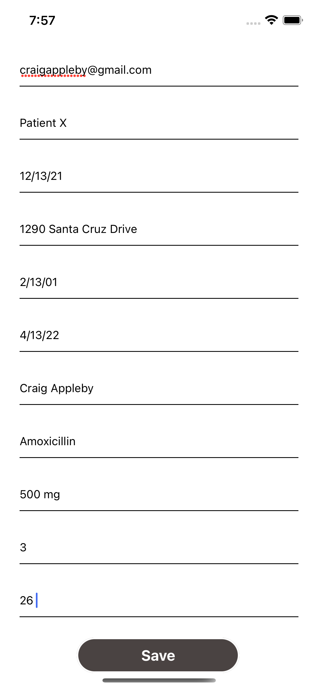
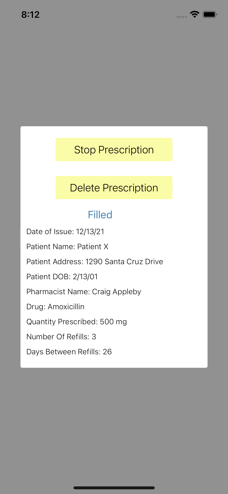

Registering as a Clinician
Registering as a Clinician
Clinician Home Screen

Clinician Prescription Screen

Add Prescription Screen

Adding Prescription

Seeing Prescription

Viewing Prescription Data

Logging in as a pharmacist

Seeing Assigned Prescription

Viewing Assigned Prescription Data
Viewing Filled Prescription as a pharmacist

Logging in as a clinician
Viewing filled prescription as the clinician

Stopping a prescription
Viewing a stopped prescription (Number of Refills set to 0)
Seeing available contacts (pharmacists that were assigned prescriptions by the user)

Chatting with pharmacist

Seeing available contacts as the pharmacist
Chatting with clinician as pharmacist